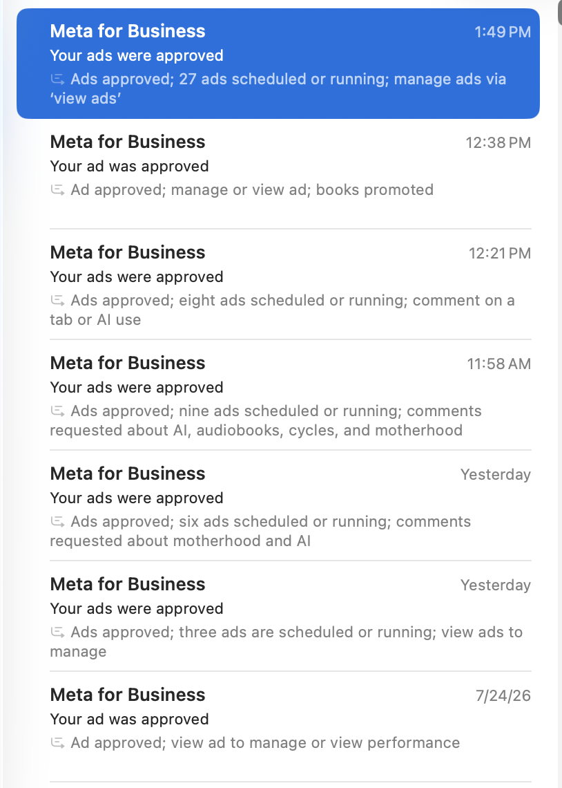

Keep your account in good standing, stop the rejections, and teach Meta exactly who you want to reach.
You don't need a studio, a videographer, or a big budget. You need a healthy account, a clear picture of who you're talking to, and the willingness to take imperfect action.
This is not a guide about writing better sales ads. This is about the layer underneath: keeping your ad account in good standing so your real ads can run, and feeding Meta better information about who you actually want to find. Almost nobody works on this layer, which is exactly why it's worth your time.
If you're working with Claude, hand it this guide and have it take you through step by step, applied to your business instead of mine. It can answer your questions as they come up, so you're never stuck guessing at something.
Give it the link to this guide, or the file itself, and start with something like this:
And any time something here isn't clear, just ask your Claude about it.
Two jobs, and they happen at the same time. Protect the account. Teach the algorithm.
Here's what happened to me. I had ads getting rejected over and over for the same policy label, in waves. Nothing I did to the copy seemed to fix it. Every rejection is a mark against your account, and enough of them means your future ads get scrutinized harder, delivered less, and cost more.
My coach Keala pointed me at something I'd never considered. Instead of fighting the rejections, run a completely separate set of ads that Meta waves through easily. Pure value content, nothing to sell, nothing to promise. Those easy approvals shift the ratio on your account and rebuild your standing.
Then the second thing clicked. If I'm running content anyway, the people who choose to watch it are telling me something. They're raising their hand and saying "this is for me." That's data I can use to find more people like them.
Content Meta approves easily, running steadily in the background. It shifts your approval ratio, rebuilds standing, and gives your real ads a healthier account to run inside.
Every person who watches your video self-selects as your kind of person. That watch data becomes a source you can build new audiences from, sharper than anything you started with.
No offer, no link, no business mention, no income talk. Pure value. That's precisely why they get approved.
The whole play is this. Not one clever ad that beats the system, but a steady run of clean, safe creative that Meta has no reason to reject, quietly rebuilding your standing while you get on with the rest of your business.
To give you some hope that you can get things moving back in the right direction, here's what it has looked like for me recently, putting these concepts to work. Each of those emails is a whole batch clearing at once, anywhere from 9 to 27 ads, not one ad at a time.

Batch after batch, on an account that had been taking rejection waves for a month
If you have a registered business and an EIN, do this today. If you don't, skip ahead to Section 03.
Business Verification is Meta confirming that a real, registered business sits behind your ad account. It raises your account limits, speeds up appeals, and gives Meta's systems a reason to trust you. There's no downside, and it's one of the simplest wins available to you. My account has been noticeably steadier since I did it.
Go to Meta Business Suite, then Settings. You're looking for the full Business Settings area, not the quick settings panel.
In the left sidebar, look for Security Center. Business Verification lives there, along with your overall account standing.
Enter your business details exactly as they appear on your official documents. A mismatch between what you type and what's on your paperwork is the most common reason verification fails.
Upload the supporting document, then confirm your connection to the business by email or phone. Then leave it alone and let Meta come back to you. Resubmitting doesn't speed it up.
Business Verification is the one in this section, and the one you want. It's private, it verifies your company, and it helps your account.
"Verify yourself or an organization" is a separate flow, used for ads about social issues, elections, and politics. That one publicly attaches your identity to your ads in Meta's Ad Library. You almost certainly don't need it. Skip it.
Meta Verified is the paid monthly subscription that puts a blue check on your Page or Instagram. It's optional, and it doesn't change how your ads get reviewed, so don't buy it expecting easier approvals. What you get is the badge, impersonation protection, and access to live support. Wanting the badge so a new person landing on your Page sees a real business is a fair reason to subscribe. Getting ads approved is not. If you do want it, you can cover your Facebook Page and your Instagram account together under your business account instead of paying for each separately, which is what I do.
You can't fix what you haven't looked at. Ten minutes here saves you months.
Before you launch anything new, find out where you actually stand. Go to your Account Quality page and look at two things: whether your account is in good standing, and whether you have any rejected ads sitting in your account right now.
This is the part that surprised me most, and it's the single most useful thing in this guide.
I learned this the hard way. After pausing a batch of campaigns, the individual ads were still sitting in Meta's review queue. Bulk-pausing them actually pushed a wave back into review, and 32 came back rejected. Ads that weren't spending a single dollar generated 32 fresh marks against my account.
Only archiving or deleting an ad takes it out of the review queue. Pausing does not. Archive keeps your data and can be undone. Delete is permanent.
So if you have rejected ads sitting in your account, clear them. Archive them if you want to keep the record, delete them if you don't.
When an ad gets rejected, the instinct is to hit "Request review." Resist it. An appeal puts your ad in front of a random reviewer with no context about your business, and it rarely beats the automated system that flagged you. Worse, that reviewer is now looking at your account, and they have the power to take further action against it.
Clear the rejected ad and move on. Put your energy into creative that gets approved the first time. This is what I do, and it's what turned my account around.
There is a single exception, and it is narrower than people assume.
You will see a Special Ad Category label show up on individual rejected ads. Credit, employment, housing, or financial products and insurance services. When it's on one ad, treat it like any other rejection and delete it. I got flagged with this label myself, deleted those ads, and my account came back to good standing without appealing anything.
The exception is when it stops being about one ad and becomes about your whole account. A woman in our mastermind had this happen. Meta started telling her to pick a Special Ad Category on ads that were already running. Her entire account had been flipped into that classification.
That is worth requesting a review on. Special Ad Categories carry real targeting restrictions: you lose age, gender, and detailed interest targeting across everything you run. An account-level flip quietly damages every campaign you have, including the ones working right now.
So the line is simple. One ad flagged, delete it. Your whole account reclassified, get it reviewed.
And never self-declare into a Special Ad Category just to make a label go away. You would be volunteering for restrictions you don't have to accept.
Every ad you create gets its own independent review, so the same video can be approved in one ad set and rejected in another. An approved ad can also flip to rejected weeks later. That's the system working as designed, not something you can argue with.
So don't relaunch a creative that's been rejected before, and build your account health on a volume of clean, safe ads rather than trying to win any single decision.
You can start this today, before you film anything, for about a dollar a day.
If you have an Instagram account with existing posts, you already have creative. Boosting those posts inside a proper engagement campaign is the fastest possible way to start collecting approvals.
This is not the "Boost" button on the Instagram app. That button gives you almost no control. You want to do this inside Ads Manager, using your existing posts as the creative.
In Ads Manager, create a new campaign and choose the Engagement objective. Set a small budget. One to three dollars a day is genuinely enough.
Keep it wide but real. Your country, an age range that covers your ideal client, and the gender you serve if that applies. Then switch on Advantage+ Audience and let Meta expand from there.
Inside the ad set, choose Create Ad, then select "Use existing post." Switch the source over to Instagram, and pick a post. Publish it. Repeat for a handful of your best posts.
Choose your most value-driven, least promotional posts. Nothing with income talk, nothing with a price, nothing with a "DM me" call to action. The whole point is easy approvals.
I added four old Instagram posts to a warming campaign at two dollars a day. Three of the four were approved the same day. That's four more approved ads on an account that needed them, for the price of a coffee across the whole week.
One job in this section: get clear on exactly who you're serving.
Everything that follows depends on this. You're making videos that give real value to one specific person, and you can't do that for someone you haven't defined.
Open every video by naming who it's for. Say it in the first line, and put it on screen too, since most people watch with the sound off. The wrong people scroll past, your person stops, and Meta goes looking for more people like the ones who stopped.
Meta has a policy against ads that assert or imply things about the person viewing them. It's one of the most common reasons coaching content gets rejected.
Do this: "To the mama who feels behind no matter how much she gets done..."
Not this: "Are you a mom who feels behind all the time?"
The first one describes. The second one accuses. Never state an age either. Say "in the little years" or "working the 9 to 5" and let your targeting handle the demographics.
If you've never written out your ideal client in detail, start here. Paste this into Claude or ChatGPT and answer the questions it asks you.
Keep the profile in a document you can paste into every prompt that follows. Everything downstream gets sharper when the AI knows exactly who it's writing for.
Aim for 10 script ideas, and film at least 5 of them. That's a full batch and plenty to start with.
Knowing the number keeps you from going forever. Ten ideas, five filmed, launched a few at a time. You can always add more later.
What you're looking for is the overlap between something you genuinely know and something your person genuinely struggles with. Your content, your life, your expertise. The prompts below just help you shape it.
Write more than you plan to film. Some scripts only reveal themselves as duds once you say them out loud, and that's useful information, not wasted work. I wrote ten and scrapped one that didn't resonate.
I filmed all of mine on my phone, in my house, in a couple of different outfits. That's the whole production story.
I want to be really clear about this because it's the part that stops people. There was no crew, no studio, no ring light situation, no perfect day. I thought about what would be valuable to my audience, and then I took imperfect action. That's it.
You don't need another app or a piece of hardware. CapCut is free and has a teleprompter built into it. You paste your script in, it scrolls on screen while you record, and your eyes stay where they should be.
CapCut comes as a phone app and as a desktop app you download to your computer. I record with the teleprompter on my phone, then do my editing on my computer because a bigger screen is easier to work on. Either way works, so use whichever you prefer.
Records with a scrolling teleprompter, then edits in the same app. Captions, text on screen, simple graphics, transitions. Free on both your phone and your computer.
Film vertical, always. It's native to Reels and Stories, which is where this content performs. You can crop a vertical video down to a square later. You cannot go the other way.
A few small things I did that took no extra effort:
The first two seconds decide whether anyone sees the rest. So film your first two seconds twice and keep the better one. It's the highest-return thing you can do with an extra thirty seconds.
A kid wandering through, a laugh at yourself, a small stumble. Those are keepers, not bloopers. They're the reason this content feels different from an ad, and feeling different from an ad is the entire point. Don't chase perfect. You will not film these if you're waiting for perfect.
Captions, a hook card, and a few visuals. Nothing crazy. All in CapCut.
My edits were simple. I added captions, put a text card on the hook, and dropped in a few visuals where I was talking about something specific. That's genuinely all of it, and I did it right there in the CapCut editor.
Most people watch with the sound off. Without captions, they scroll. CapCut auto-generates them, then you clean up the words it got wrong. Always check the names of things.
One short phrase, on screen from frame one. This is your scroll-stopper for anyone watching without sound. Something like "3 books for the mama who feels behind" or "why moms are tired after bedtime."
If you're naming a book, hold it up or drop the cover on screen. If you're giving four questions, put each one on screen as you say it, then stack all four on one card at the end so people can screenshot it. Simple text cards are plenty.
An easy one that makes a video feel more produced than it is: split the clip right after your hook and drop one of CapCut's built-in transitions there. It gives the viewer a small visual reset at the exact moment you move from the hook into the content.
No intro card, no outro card, no big logo. The more this feels like organic content and the less it feels like an ad, the better it performs. Export as vertical MP4, and name each file something you'll recognize when you're uploading several at once.
If a video runs long, never cut the hook and never cut the ending. Take it out of the middle. And end on your last line, then stop. No outro, no sign-off, no "thanks for watching."
Small budget, everything paused, released in small batches.
This is a separate campaign from anything else you're running. Do not touch your working sales campaigns to do this. This one lives alongside them and does its own job.
| Setting | What To Choose | Why |
|---|---|---|
| Objective | Awareness or Engagement | Either works. Awareness with video views gets you watch data. Engagement optimizes for comments and interactions |
| Budget | $2 to $3 per day, per ad set | Health comes from approved ads, not spend. This is meant to run forever |
| Placements | All Facebook and Instagram | Let Meta put it wherever it performs |
| Creative | Plain video post, no link, no button | The moment you add a destination, it stops being pure value in Meta's eyes |
| Call to action | Spoken and in the caption only | "Comment below" is the ask. Comments are the engagement signal you want |
| Status | Everything paused at first | You review before anything spends a dollar |
Do not upload nine ads at once. Upload three, wait for them to clear review, then upload the next three. Every ad gets its own independent review, so if something in your approach is going to trip a policy, you find out on three ads instead of nine.
This is exactly how I ran mine, and it's how all nine came back approved.
This confuses everyone the first time. When your campaign is paused, the status column doesn't say "Approved." Here's how to read it:
Once all your ads read as paused, do a final look at the videos and captions, then flip the campaign live.
When I restructured my campaign after launch, it pushed my already-approved ads back into review. They cleared again, but it was an unnecessary risk. Settle the setup first, then leave it alone.
Two steps. Build custom audiences from people who already know you, then build a lookalike from each one.
You already have data sitting in your ad account from everything you've run before. We're going to turn it into audiences that go find you more of the right people.
In Ads Manager, go to Audiences, then Create Audience, then Custom Audience. Build the ones below that you have data for. If you don't have all three, start with what you've got.
Set the retention window to 180 days on each one.
| Audience | Who's In It | What You Need |
|---|---|---|
| Ad engagers | People who watched your video ads or engaged with your ads before | Nothing. Meta already has this. Choose Video or Instagram account as the source |
| Page viewers | People who landed on your website or funnel page | Your pixel installed on that page |
| Leads or registrants | People who gave you their name and email | Your pixel, or upload your list |
A new custom audience needs time to populate. Build them, then leave them alone for at least 24 hours before you do anything with them.
Your custom audiences are people who already know you. A lookalike takes one of those groups and finds new people who resemble them, which is how you reach fresh people who fit your ideal client.
Build a 1% lookalike from each custom audience. Then give each one its own ad set running these same engagement videos, which is Section 11.
The same videos, running to several different audiences. More approved ads and better data at the same time.
Here's where the structure pays off twice. Once you have several source audiences and lookalikes built, give each one its own ad set inside your campaign, and put the same videos in every ad set.
Nine videos across three ad sets is 27 ads. Each one goes through its own review and each one adds to your approval record. And every one of those ads is genuinely delivering to a real audience, so you're also learning which audience responds best.
Use ad set budgets, not one campaign budget. That way every audience gets its guaranteed two dollars instead of Meta pushing all the money toward whichever one is cheapest.
Build ad sets around audiences you genuinely want to reach, not just to rack up approvals. Remember from Section 03 that a paused ad is still sitting in Meta's review queue and can come back rejected later, so an ad you never intend to run is exposure without any benefit.
Do it around real audiences and the extra approvals come as a byproduct of doing the work properly.
Two policies catch almost everyone in our world. Know those, and you'll clear review the vast majority of the time.
Personal attributes. Meta doesn't allow ads that assert or imply things about the person watching them: their finances, their body, their health, their situation. This is the one that catches coaching and mentorship content most often, and the fix is easy. Describe instead of accuse. "To the mom who..." rather than "Are you a mom who...?"
Financial claims. Anything that reads as income potential, exaggerated financial gain, or an unrealistic outcome. It's why these videos stay entirely off the topic of money. Keep your value in the safe lane and this one simply never comes up.
I hope this brought you real value. None of this is complicated, it just takes someone showing you where to look. Everything here is what I've actually done on my own account, and it's what turned things around for me.
The part that matters most isn't the campaign settings or the audience building. It's that you know something worth telling your people, and you're willing to pick up your phone before you feel ready. Take the imperfect action. It counts more than the perfect plan.
If you have questions as you work through this, or you get stuck somewhere, just email me. I'd genuinely rather hear from you than have you sit stuck on something I could answer in two minutes.
I believe in you.
Marina